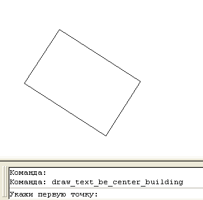

Команда:draw_text_be_center_building
Команда:draw_text_be_center_buildingУказываем три точки, текст подписывается в центре
Вызов программы:
Команда:draw_text_be_center_building
 Укажи первую точку:
Укажи первую точку:
 Указывает точку на первом угле здания
Указывает точку на первом угле здания
Укажи вторую точку:
Указывает точку на вторм угле здания
Укажи третью точку:
Указывает точку на трутьем угле здания
Введи этажность и буквенный индекс:
Вводит текстовую стоку с этажностью и буквенным индексом строения
Надпись распологается в центре здания, ориентированная по длинной стене. Надпись выполняется стилем текста "Рубленый (Р-131)", если контур здания мал и не позволяет выполнить надпись соответствующей высотой шрифта - высота шрифта будет уменьшена в плоть до минимально допустимой по УЗ. Если же минимальный размер все равно не влазиет от об этом будет сообщено пользователю:
Подпись не входит в контур, попробуй разместить рядом
Центром здания принимается центральная точка прямоугольника построеного по трем указанным точкам (алгоритм построения прямоугольника от сюда).
Пример
